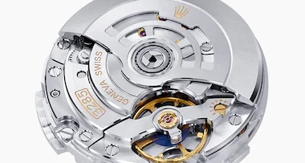

오이스터, 넓은 3열 링크
브레슬릿 소재
오이스터스틸
클라스프
풀림 방지 기능이 있는 폴딩 오이스터록 세이프티 클라스프, 편안한 착용감을 위해 브레슬릿 길이를 쉽게 5mm 늘이거나 줄일 수 있는 이지링크
Z-blue
세부 사항
푸른색 야광이 오랫동안 지속되는 크로마라이트 시각 표식
| 모델 케이스 | 무브먼트 |
|  | |
|
모델 케이스 오이스터, 40mm, 오이스터스틸 오이스터 구조 모노블록 케이스 본체, 스크류-다운 케이스 백과 와인딩 크라운 직경 40mm 소재 오이스터스틸 베젤 스무스 와인딩 크라운 스크류-다운, 트윈록 2중 방수 시스템 크리스탈 긁힘 방지 사파이어 방수 수심 100m 방수 |
무브먼트 오토매틱 와인딩 메케니컬 퍼페츄얼 무브먼트, 자기장 차폐막으로 무브먼트 보호 칼리버 3131, 롤렉스 매뉴팩처 정밀도 하루 –2/+2초의 평균 허용 오차 기능 다이얼 중앙에 시, 분, 초침 위치. 24시간 표시. 독립적으로 움직이는 시침을 이용한 듀얼 타임존 기능. 날짜 순간 변경 기능. 시간 맞출 때 초침이 정지하여 정확한 시간 설정이 가능 오실레이터 자기장에 반응하지 않는 블루 파라크롬 헤어스프링 와인딩 영구회전자 퍼페츄얼 로터를 통한 양방향 오토매틱 와인딩 파워 리저브 약 48시간 |
| 브레슬릿 | 다이얼 |
|
|
|
브레슬릿 오이스터, 넓은 3열 링크 브레슬릿 소재 오이스터스틸 클라스프 풀림 방지 기능이 있는 폴딩 오이스터록 세이프티 클라스프, 편안한 착용감을 위해 브레슬릿 길이를 쉽게 5mm 늘이거나 줄일 수 있는 이지링크 |
다이얼 Z-blue 세부 사항 푸른색 야광이 오랫동안 지속되는 크로마라이트 시각 표식 |